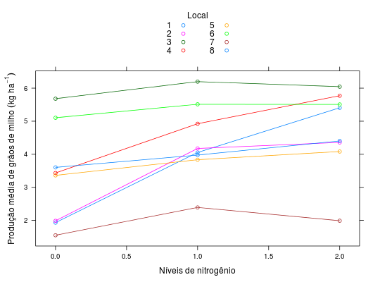

Dados referentes à produção de milho em grãos de ensaios fatoriais \(3^3\) de adubação NPK na cultura do milho. Os experimentos foram realizados em 8 locais. O delineamento experimental não foi informado.
Um data.frame com 24 observações e 3 variáveis, em que
localnitroprodO data.frame possui um atributo com os quadrados médios
residuais em cada experimento.
BANZATTO; KRONKA (2013), Quadro 8.4.3, pág. 202.
library(lattice) data(BanzattoQd8.4.3)#> Warning: data set ‘BanzattoQd8.4.3’ not foundstr(BanzattoQd8.4.3)#> 'data.frame': 24 obs. of 3 variables: #> $ local: Factor w/ 8 levels "1","2","3","4",..: 1 1 1 2 2 2 3 3 3 4 ... #> $ nitro: num 0 1 2 0 1 2 0 1 2 0 ... #> $ prod : num 1.93 4.05 5.41 1.99 4.18 ... #> - attr(*, "qmr")= num 247734 180376 658088 277384 646470 ...with(BanzattoQd8.4.3, addmargins(tapply(prod, list(local, nitro), FUN = mean)))#> 0 1 2 Sum #> 1 1.932 4.054 5.406 11.392 #> 2 1.987 4.176 4.358 10.521 #> 3 5.681 6.198 6.045 17.924 #> 4 3.434 4.924 5.771 14.129 #> 5 3.361 3.835 4.083 11.279 #> 6 5.105 5.512 5.508 16.125 #> 7 1.550 2.392 1.990 5.932 #> 8 3.603 3.975 4.403 11.981 #> Sum 26.653 35.066 37.564 99.283xyplot(prod ~ nitro, groups = local, data = BanzattoQd8.4.3, type = "o", auto.key = list(title = "Local", cex.title = 1, columns = 2), xlab = "Níveis de nitrogênio", ylab = expression( "Produção média de grãos de milho"~(kg~ha^{-1})))